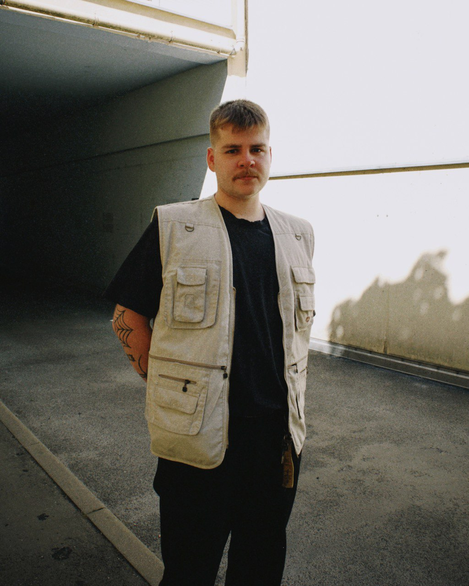

Håstad
Whether it's warm and dubby deep house, driving sci-fi techno or polyrhythmic left-field breaks, Håstad's music collection knows no genre boundaries, only the appropriate setting. The Leipzig-based DJ and producer has been marking his musical footprint on the local scene for about two years now. As co-founder of the collective and party series MANIAC, as well as a member of the Electric Island crew, he tries to transport his vision of contemporary yet timeless electronic sounds to the dance floors of the city and beyond, no matter what the occasion is.